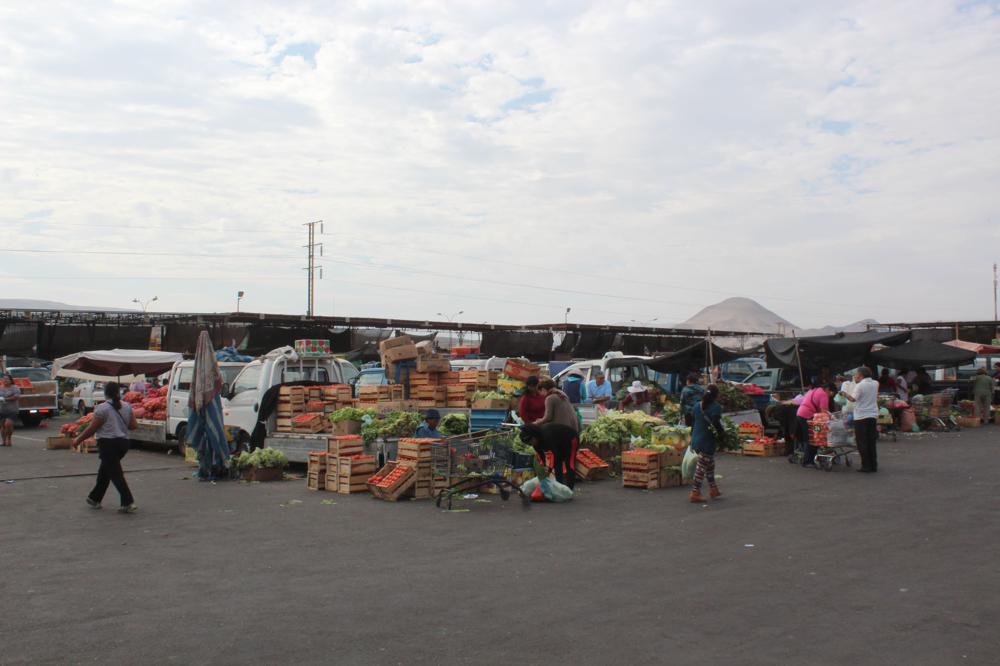

RESEÑA HISTÓRICA
Agrícola del Norte S.A. es una empresa Ariqueña, fundada el 28 de Diciembre del año 1989, por los medianos y pequeños agricultores de todo los valles de la XV Región. Es una a la vanguardia como una alternativa más para el desarrollo y progreso de los agricultores de la zona y la ciudad; aprovechando sus fortalezas de más de 400 accionistas que se dan las mismas oportunidades de una agricultura futurista y progresiva mediante la tecnificación de los diversos sistemas de riego.

SALA DE VENTAS
Ofrece a sus asociados y agricultores una amplia gama de artículos para sistemas de riego tecnificado, desde motobombas y filtros de discos, hasta goteros de la mejor calidad, así mismo encontrara fertilizantes, pesticidas e insumos en general de las mejores clases y precios convenientes, además de nuestra asistencia técnica para usted con visitas a terreno y seguimiento productivo.

CENTRO DE TRANSACCIÓN AGRÍCOLA
En el terminal del agro, los agricultores venden al por mayor, productos agrícolas que provienen de los distintos valles de la XV región, abastecen entre otros, a Iquique, Calama, Antofagasta y en forma permanente al resto del país todo el año. En tiempo de inverno abastecen la zona centro y sur de nuestro país. Los productos de los agricultores de esta zona, abastecen además en los mismos periodos a Buenos Aires, Mendoza, Argentina.- agrícola del norte tiene un terminal, exclusivamente para los mayoristas con capacidad para 1200 agricultores.
En su registro más alta la capacidad de 600 agricultores, permitiendo el ingreso de camiones internacionales provenientes del Perú, Bolivia y en el futuro próximo de Brasil. Al servicio de ellos están dispuestos cámaras, galpones y un patio vehicular de 4 hectáreas de terrenos. Se trabaja en forma intensiva en los días lunes, miércoles, viernes y sábado, los otros días restantes en menor escala. Tanto los productores, como los restantes en menor escala. Tanto los productores, como los intermediarios, realicen su negocio en un ambiente transparente y de confianza mutua, donde los precios son fijados por el libre juego de la oferta y la demanda.
CENTRO DE TRANSFERENCIA
Nuevo proyecto que se incorpora con más de 5 años prestando servicios de control fitosanitarios, balanza de pesaje de camiones, servicios higiénicos y otros servicios que en el futuro se irán adicionando.- Actualmente está funcionando un galpón que le permitirá la revisión y el certificado fitosanitario indispensable para la exportación e importación hacia los países de Perú y Bolivia.- Además en dichos terrenos se pueden incorporar otros servicios.
VALLES QUE REPRESENTAMOS.
Azapa – Lluta – Chaca- Camarones – Codpa- Putre – Socorama – Lupica – Timar – Ticnamar – Chapiquiña – Belen – Camiña – Chiapa – Pica – Miñi – Miñi – Esquiña – Pachica – Jaiña.